Hướng dẫn sử dụng VietPOS
Dành cho thủ kho
1. Đăng nhập
- Mở app VietPOS hoặc trình duyệt theo hướng dẫn cửa hàng.
- Nhập email / mật khẩu do quản lý cấp → Đăng nhập.
- Máy đã từng đăng nhập: có thể chọn tài khoản trong «Tài khoản trên máy này».
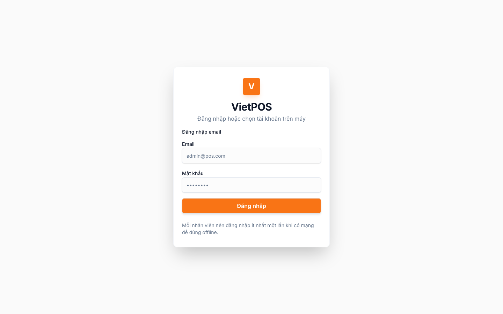
2. Menu của thủ kho
Sau đăng nhập, sidebar hiện vai trò Thủ kho. Các mục bạn dùng:
| Menu | Dùng để |
|---|---|
| Dashboard | Xem nhanh số liệu cửa hàng (doanh thu, sắp hết hàng…) |
| Sản phẩm | Xem danh mục; thêm / import nếu làm tại chi nhánh chính |
| Tồn kho | Xem số lượng; chọn SP sắp hết để tạo phiếu nhập |
| Phiếu nhập/xuất | Công việc chính — badge đỏ = phiếu chờ xử lý |
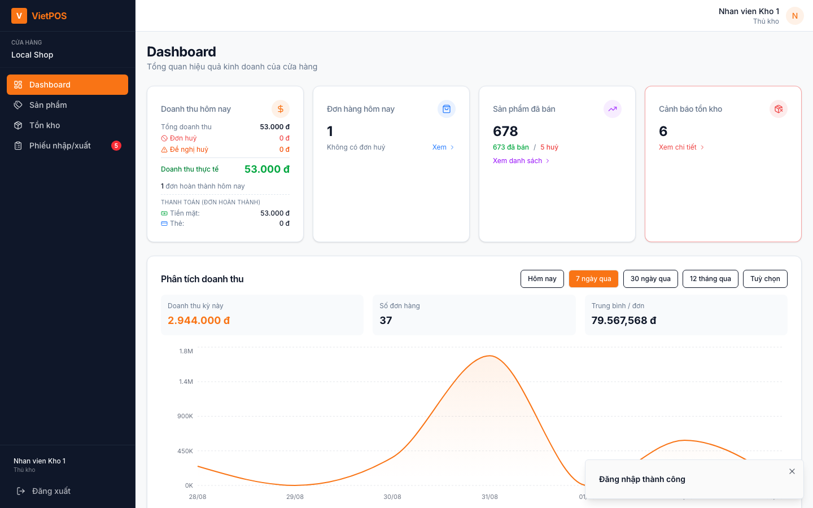
3. Dashboard
Trang chủ sau đăng nhập. Dùng để nắm tình hình (đơn hôm nay, hàng sắp hết). Bán hàng và xử lý bill do nhân viên quầy làm trên POS — thủ kho không checkout.
4. Tồn kho
Menu Tồn kho — theo dõi số lượng, không hiện giá bán / giá vốn với thủ kho.
- Thẻ: tổng số lượng tồn · số mặt hàng (SKU) · sắp hết hàng (≤ 5).
- Ô «Tìm kiếm sản phẩm…» theo tên / mã.
- Lọc tồn: Tất cả · Tồn ≤ 5 / 10 / 15.
- Cột: ảnh, mã SP, tên, tồn kho (dòng sắp hết tô vàng + chữ «sắp hết»).
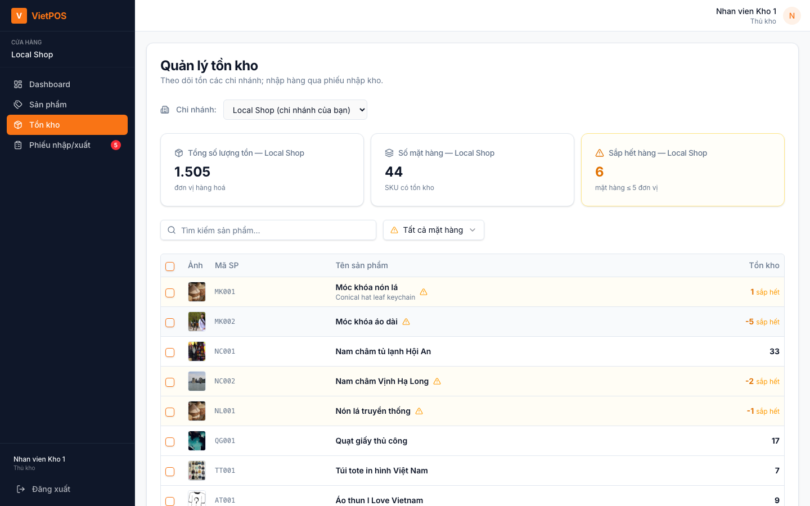
4.1. Tạo phiếu nhập từ tồn kho
- Tick các mặt hàng cần nhập (hoặc chọn tất cả trên trang lọc).
- Bấm Tạo phiếu nhập (n) — hệ thống gợi ý số lượng (hàng ≤ 5 được đề xuất bù).
- Kiểm tra dòng hàng / SL → gửi phiếu (xem mục 7).
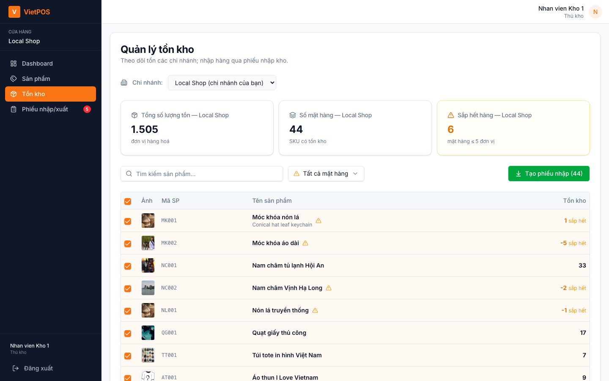
5. Sản phẩm
Menu Sản phẩm — xem danh mục (tên, mã, ĐVT, VAT%, giá bán, tồn, trạng thái).
- Giá vốn bị ẩn với thủ kho.
- Sửa giá / ngừng kinh doanh do admin hoặc quản lý tại chi nhánh chính.
- Nếu làm tại chi nhánh chính (kho tổng): có thể Thêm sản phẩm và Import Excel.
- Chi nhánh con: thường chỉ xem. SP của CN khác ghi «Sản phẩm chi nhánh khác — chỉ xem».
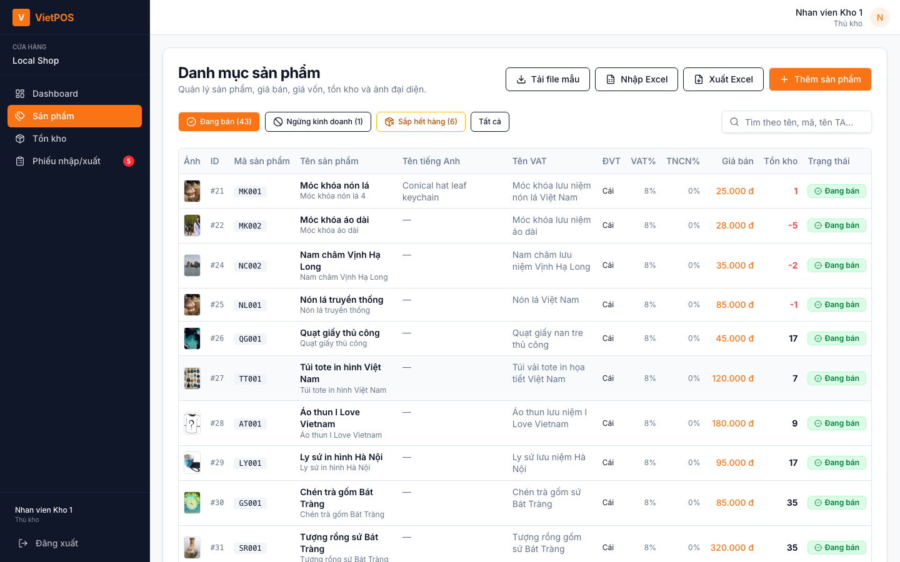
6. Phiếu nhập / xuất — tổng quan
Menu Phiếu nhập/xuất. Mỗi phiếu có Từ CN → Đến CN. Badge đỏ trên menu = số phiếu đang chờ bạn xử lý.
| Trạng thái | Ý nghĩa |
|---|---|
| Chờ duyệt | Mới tạo, chưa duyệt |
| Đã duyệt | Đã chấp nhận — chờ bên gửi bấm Vận chuyển |
| Đang vận chuyển | Đã trừ tồn bên gửi — chờ bên nhận xác nhận |
| Hoàn thành | Đã cộng tồn bên nhận |
| Từ chối / Đã huỷ | Không điều chuyển |
Lọc: khoảng ngày · loại (Tất cả / Phiếu nhập / Phiếu xuất) · trạng thái. Bấm mũi tên trên dòng để xem chi tiết SP và lịch sử.
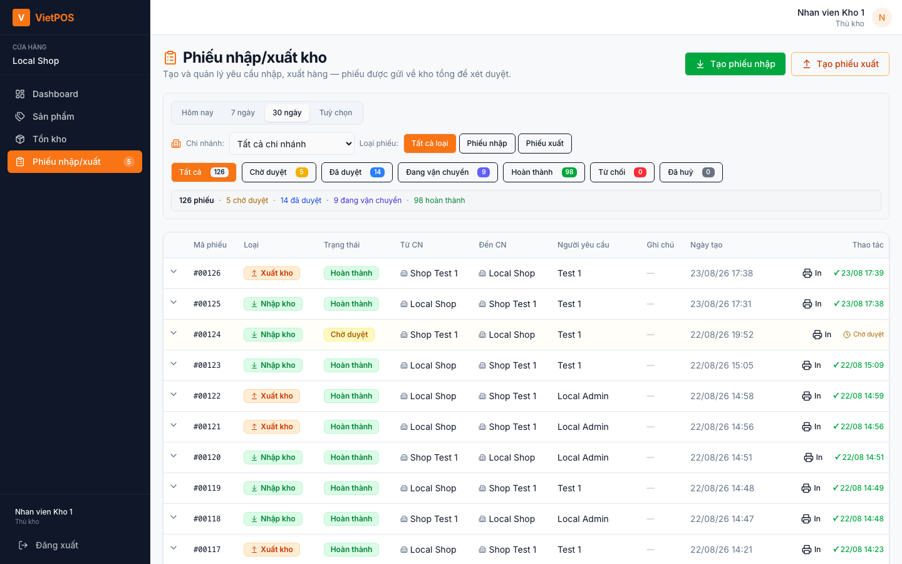
7. Tạo phiếu nhập
Nút xanh Tạo phiếu nhập. Nhập = hàng về chi nhánh đích từ kho tổng (hoặc kho tổng tạo hộ).
7.1. Bạn ở chi nhánh con
- Mở «Tạo phiếu nhập kho» — banner: Kho tổng → chi nhánh của bạn.
- Thêm sản phẩm (hàng sắp hết hiện trước). Cột «Tồn kho chính» = còn ở kho tổng.
- SL không được lớn hơn tồn kho chính.
- Ghi chú nếu cần → tạo phiếu.
- Bạn không tự duyệt phiếu nhập mình xin — kho tổng duyệt và vận chuyển.
7.2. Bạn ở kho tổng / chi nhánh chính
- Chọn Chi nhánh gửi hàng (hàng đi từ CN đó về kho tổng).
- SL không vượt tồn chi nhánh gửi.
- Tạo xong: bên gửi (CN nguồn) duyệt / vận chuyển theo quy trình.
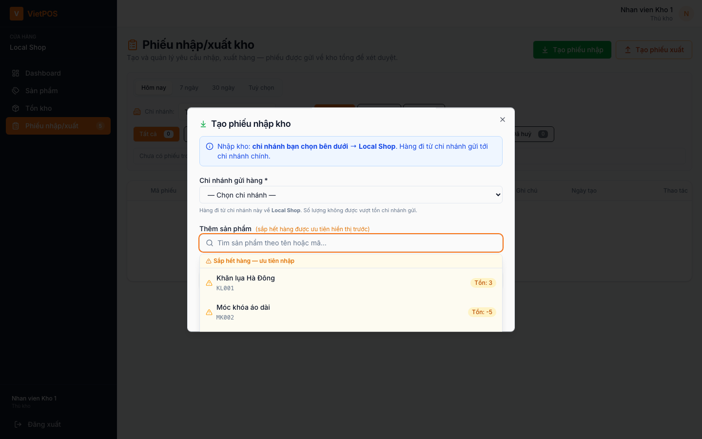
8. Tạo phiếu xuất
Nút cam Tạo phiếu xuất. Xuất = hàng đi từ chi nhánh bạn sang CN / kho tổng khác.
- Chọn Chi nhánh / kho nhận hàng.
- Thêm SP; SL không vượt tồn hiện tại (ô hiện «Tối đa …»).
- Có cột tồn chi nhánh nhận để đối chiếu.
- Tạo phiếu. Bên gửi không tự duyệt — chi nhánh nhận duyệt. Sau đó bên gửi bấm Vận chuyển (trừ tồn nguồn).
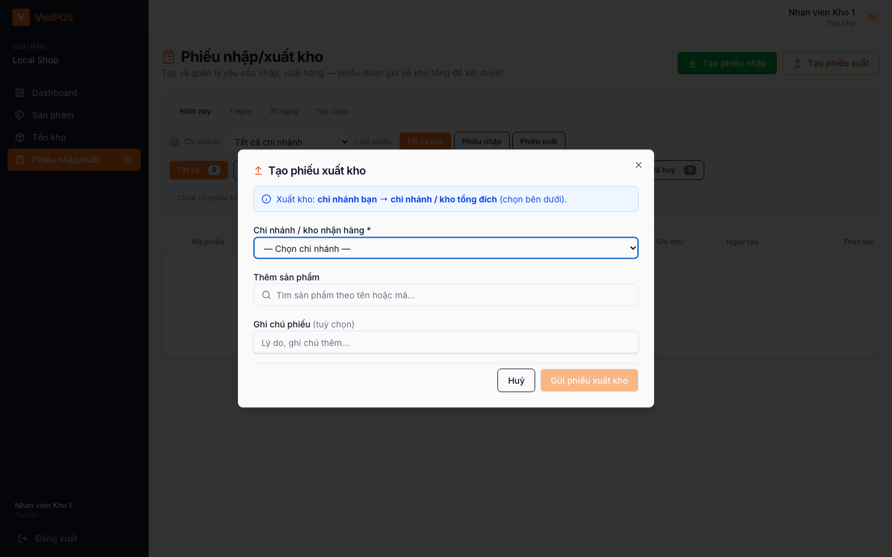
9. Duyệt, vận chuyển, nhận hàng
Nút hiện đúng vai trò của chi nhánh bạn trên phiếu đó.
9.1. Duyệt / Từ chối (trạng thái Chờ duyệt)
| Loại phiếu | Ai được duyệt |
|---|---|
| Nhập kho | Bên gửi (kho tổng khi CN con xin nhập). CN nhận không tự duyệt. |
| Xuất kho | Bên nhận. CN xuất không tự duyệt. |
- Duyệt — chuyển sang Đã duyệt.
- Từ chối — bắt buộc nhập lý do.
- Không đủ quyền: dòng hiện «Chờ duyệt».
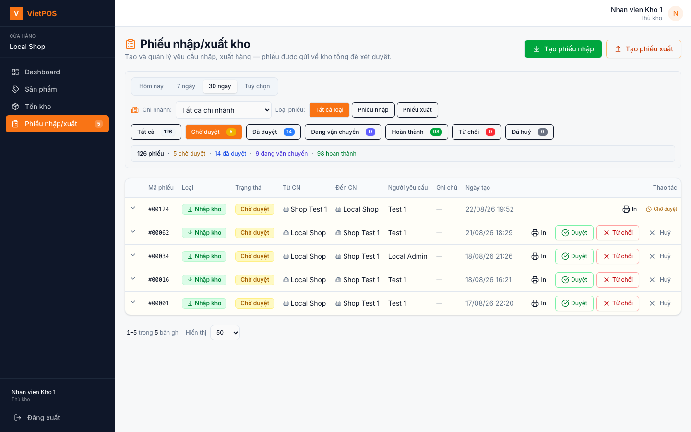
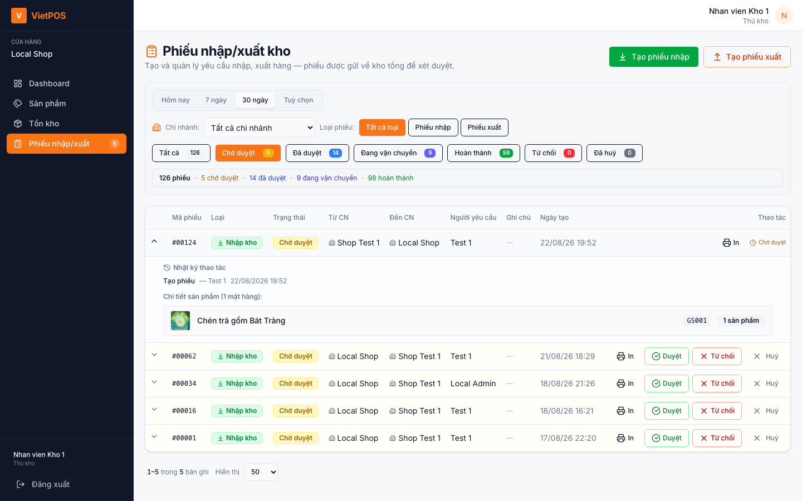
9.2. Vận chuyển (trạng thái Đã duyệt)
Nút Vận chuyển do bên gửi bấm. Hệ thống trừ tồn tại chi nhánh nguồn, phiếu sang «Đang vận chuyển».
9.3. Nhận hàng (trạng thái Đang vận chuyển)
- Phiếu nhập: nút Nhận hàng — kho tổng hoặc thủ kho / admin CN đích.
- Phiếu xuất: nút Xác nhận nhận — chỉ thủ kho / admin chi nhánh đích.
- Hộp thoại: kiểm tra Từ → Đến, danh sách SP / SL, nhập Người nhận hàng * → Xác nhận nhận hàng.
- Hệ thống cộng tồn chi nhánh đích và đánh dấu Hoàn thành.
10. In phiếu & huỷ
- In trên mỗi dòng — phiếu kho để kẹp hàng / bàn giao.
- Huỷ khi phiếu còn Chờ duyệt / Đã duyệt: người tạo hoặc người có quyền duyệt.
- Phiếu Đang vận chuyển / Hoàn thành: chỉ admin tổng hoặc admin chi nhánh chính được huỷ.
11. Chi nhánh chính vs chi nhánh con
| Kho tổng / CN chính | Chi nhánh con | |
|---|---|---|
| Xem phiếu | Cả tổ chức; lọc theo chi nhánh | Chỉ phiếu có mình ở Từ hoặc Đến |
| Xem tồn CN khác | Có (chỉ xem) | Chỉ tồn shop mình |
| Thêm / import SP | Có | Không |
| Sửa giá / ngừng KD | Không (admin / quản lý) | Không |
| Phiếu nhập CN con xin | Duyệt + vận chuyển | Tạo phiếu, chờ kho tổng |
| Nhận hàng phiếu xuất | Khi mình là đích | Khi mình là đích |
12. Mạng / thiết bị
- Phiếu nhập/xuất cần mạng. Không thao tác phiếu khi mất kết nối.
- Tồn kho / sản phẩm của thủ kho ưu tiên dữ liệu online (số liệu mới sau khi nhận hàng).
- «Thiết bị chưa được duyệt» → báo admin duyệt máy, không dùng máy lạ.
13. Sự cố thường gặp
| Hiện tượng | Việc nên làm |
|---|---|
| Không thấy POS / Đơn hàng | Đúng với thủ kho — dùng Tồn kho và Phiếu nhập/xuất |
| Không duyệt được phiếu nhập | CN nhận không tự duyệt; nhờ kho tổng / bên gửi |
| Không duyệt được phiếu xuất | Bên gửi không tự duyệt; nhờ CN nhận |
| Không bấm Vận chuyển | Chưa duyệt, hoặc bạn không phải bên gửi |
| Không nhận hàng | Phiếu chưa «Đang vận chuyển», hoặc bạn không phải CN đích |
| SL nhập/xuất bị chặn | Vượt tồn kho chính / tồn nguồn — giảm SL |
| Không thêm được sản phẩm | Chỉ kho tổng được thêm / import |
| Thiết bị chưa duyệt | Báo admin |
| Mất mạng khi tạo phiếu | Đợi mạng; không xóa dữ liệu trên máy |
14. Quy tắc làm việc gọn
- Đăng nhập bằng tài khoản thủ kho do quản lý cấp.
- Mỗi sáng: Tồn kho (sắp hết) → tạo / xử lý phiếu chờ trên menu.
- Duyệt đúng phía (gửi / nhận) theo loại phiếu — không duyệt hộ sai CN.
- Vận chuyển chỉ khi hàng đã xuất; nhận hàng chỉ khi hàng đã về, ghi đúng người nhận.
- Đối chiếu tồn sau khi hoàn thành. Lệch → ghi mã phiếu + giờ + báo quản lý.
- Không đổi giá / không hủy phiếu đang vận chuyển. Không dùng POS.
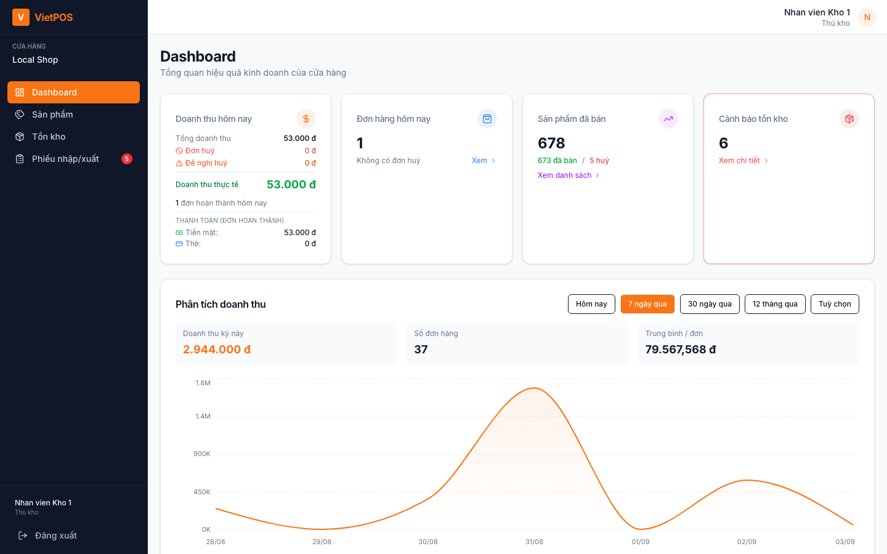